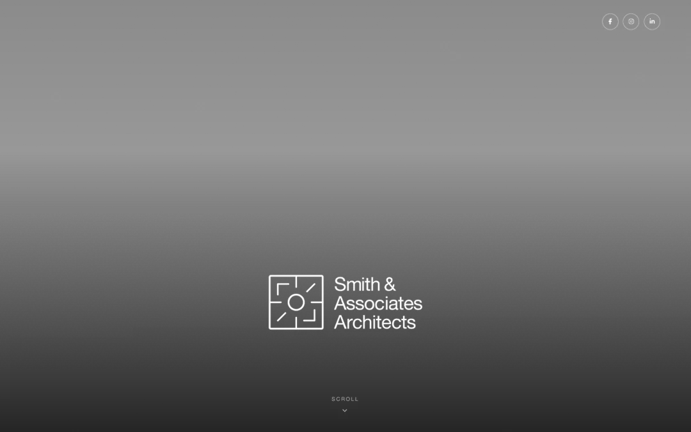
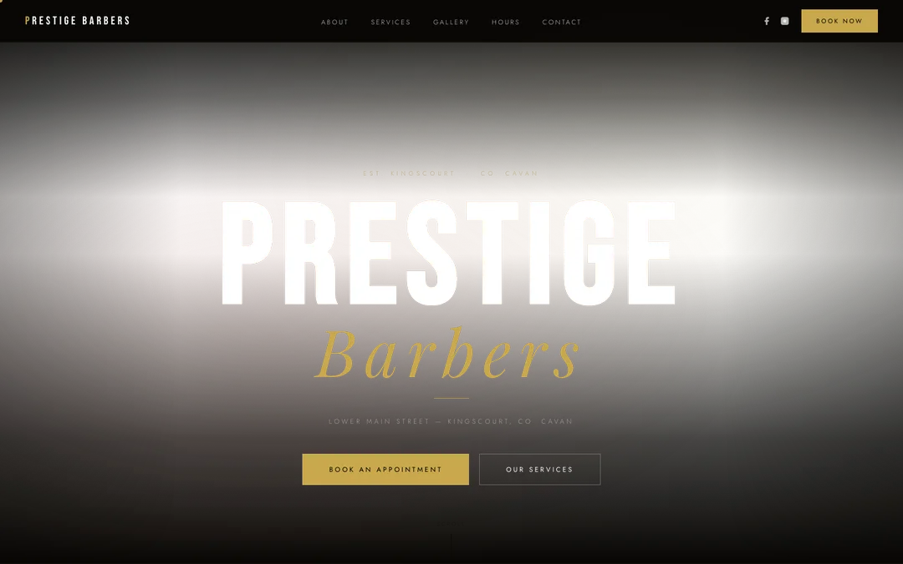
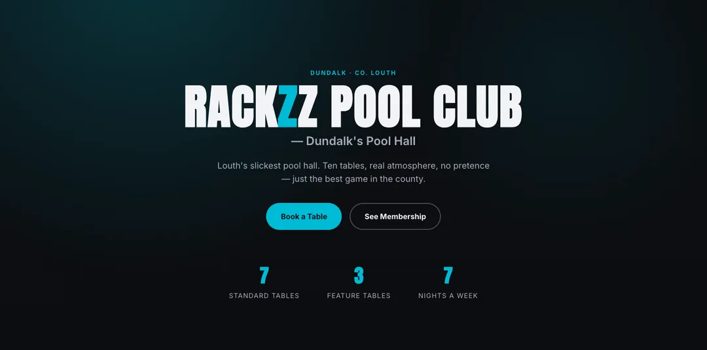

Websites & AI Systems · Ireland
The definitive growth partner for fast-moving companies.
Two things grow a business: a site that makes people stop, and systems that make sure every visitor becomes a customer. We design the websites and build the AI automations — done for you, and yours to keep.
Chapter One
Two reasons you're not growing.
Too few conversations, or too many wasted. Most businesses that come to us aren't short of enquiries — they're losing deals in the gap between the enquiry and the signature.
of buyers go with the first company to respond — not the cheapest, the fastest.
average time a service business takes to answer a new enquiry.
estimated annual revenue lost to quote & follow-up failure at a mid-sized business.
Based on B2B lead-management benchmarks across service industries, 2025.
Chapter Two — What We're Known For
Sites built for the business, never from a template.
No page builders, no stock layouts. Every site below was designed from scratch for a real business — B2B and local alike — and most went live inside fourteen days.



Discovery call, design and build from scratch, a live preview you review as many times as it takes, then go-live on your own domain — hosting and SSL handled. See the full process and more work →
Chapter Three
The systems that catch what the site brings in.
A website earns the visit. These make sure the visit turns into a customer — wired into the tools you already use, built around how you actually sell, not a generic template.
Instant lead response
Every new lead gets a real reply in under sixty seconds, by text, WhatsApp or voice — any hour, any day.
AI call answering
An AI receptionist answers what your team can't, qualifies the caller and books them straight to the calendar.
CRM & sales automation
Built around how you actually sell first, then automated — HubSpot, Pipedrive, GoHighLevel, or from scratch.
Quote & proposal follow-up
Multi-touch sequences that run until someone replies, so a quote never just goes quiet.
Database reactivation
Working back through enquiries you already paid to acquire — usually the fastest money available to a business.
Reviews & referrals
The request fires the moment a job is marked complete, when the customer is happiest to say yes.
Twelve systems in total — we build the ones you're actually missing. See all twelve →
Chapter Four
Real results. Real businesses.
“We were living off referrals and the odd bit of LinkedIn, so some months were great and some were dead quiet. The first qualified meetings landed inside a fortnight, and I'm not the one chasing them anymore. I just turn up to the calls.”
“Half our day is up a ladder or in the van, so calls got missed and quotes went out and never got followed up. Now every enquiry gets a reply straight away and the chasing happens on its own.”
“I was doing all the admin myself between sessions, meaning to get back to people and forgetting. FlowBuild automated the follow-up and went back through old enquiries I'd written off completely. Bookings are up and I've got my evenings back.”
Also Available — Ask On The Call
B2B Outbound
For B2B companies that want a fully outsourced outbound department: a verified ICP list, campaigns sent from separate domains so yours is never touched, and an SDR Agent qualifying every reply before it reaches your calendar. How it works →
Paid Ads & Creative
Ad concepts, creative testing and landing pages where the click deserves somewhere better to land. Useful once the site and the response systems are already in place.
Chapter Five
Two locals. No middlemen.
No account managers, no outsourced delivery team. When you work with FlowBuild AI, you deal directly with the two people actually doing the work.

Liam Kieran
Digital Strategy & Websites
Business management graduate and digital strategist. Diploma in AI for Business from UCD. Designs the websites and the automations behind them.

Paddy Meade
Tech, Funnels & Automations
Self-made business owner and science graduate. Builds the full-stack systems and automations that run quietly in the background.


Chapter Six
Before you book the call.
What kind of businesses do you work with?
Both B2B and local, consumer-facing businesses — architects, trades, barbershops, gyms, clinics, renovation companies, professional services. What our clients have in common isn't an industry, it's a shape: enquiries or prospects come in, someone has to follow up, and revenue is lost when that doesn't happen fast or consistently enough.
What's included in the 14-day setup?
Everything on your side is scoped on one onboarding call. Depending on what you need, we configure the website, AI voice and SMS response, calendar integration, CRM connection, follow-up sequences and reporting. You review and approve the flows and copy before anything goes live.
Does this work with our existing CRM and tools?
Yes. We integrate with most common CRMs including HubSpot, Salesforce, Pipedrive and GoHighLevel, as well as industry-specific tools. If you're running on spreadsheets, we'll build something purpose-fit for how you actually work.
What if the AI says something wrong to a customer?
The AI is trained on your specific business — your pricing, your process, your FAQs — and it isn't built to improvise. If a question falls outside what it knows, it takes a message and escalates to your team immediately rather than guessing. You review and approve every script before we go live.
What does it cost, and are we locked into a contract?
Every business needs a different combination of systems, so we price to what you actually need rather than a fixed package, and walk you through the numbers plainly on the first call. There's no lock-in — everything we build is yours to keep.
Start Here
Free growth audit call. Fifteen minutes, no pitch.
Book a free call →© 2026 FlowBuild AI. All rights reserved. Ireland. — 4 sites · 6 systems · 0 leaks